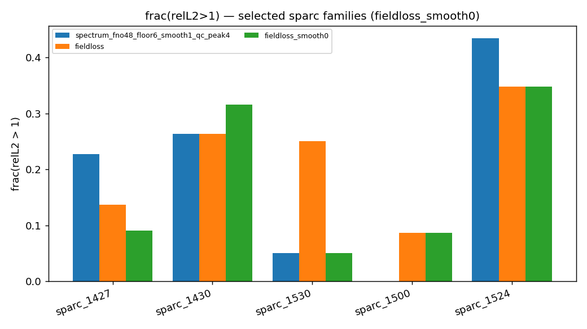

Companion to SURGE_M3DC1_RESULTS_REPORT.md (full workflow, figures, and run logs — unchanged).
Status: 2026‑07‑06 · test split n = 1994 · oracle‑phase field metrics unless noted.
This document is a story-first synthesis of the eigenmode spectrum surrogate work: one thread from “high patR²” to “what actually reconstructs δp(R,Z)”, with factual tables and links to evidence. Use it for papers, Opus, or stakeholder briefings; use the main report for reproducibility commands and asset paths.
We train a 2D FNO on max-normalized log₁₀|δp̂|(m, ψ_N) with equilibrium inputs only.
Pattern R² on the spectrum image is a misleading selection metric: qc_mhi100 has the
best patR² (median 0.932, only 18% of cases below 0.9) but the worst field quality
(frac(relL2>1) 0.27). Adding a differentiable field-loss term and selecting checkpoints
by field relL2—not patR²—cuts broken field cases from 358 → 200 vs production qc_peak4.
A family-level regression on sparc_1530 (edge-localized modes) led to targeted single-lever
runs: geom channels fix that family but not the global leaderboard; reducing target
smoothing (Runs D / D′) yields the largest global field gains. Run D′ (σ=0) is
the best field model on the full test set; Run D (σ=0.5) is slightly better on
sparc_1530. Both pay a large patR² cost (~90–97% of cases below 0.9 vs ~40% for _qc).
| Metric | Definition | Optimized by default training? | Deployment meaning |
|---|---|---|---|
| Pattern R² | Correlation of mean-subtracted log spectrum on uniform 128×128 (m, ψ_N) grid | Yes (val_r2 / patR²) | “Does the ridge shape in log space match?” |
| Field relL2 | IFFT predicted |δp̂| with true phase → Re(δp)(R,Z), max-normalized, relL2 vs GT | Only with --field-loss-weight + --select-by field |
“Does the physical field look right?” (oracle φ) |
Critical caveat (§9.4 of main report): all field numbers below use oracle true phase. Magnitude is learned; phase is borrowed from GT. Estimated-phase field relL2 is future work.
Why the metric gallery can look “best” for D′ while patR² is terrible: the gallery rows are
fixed test cases (same ordering as _qc p2…p98). Lower field relL2 in the Δ panels is the
relevant signal for deployment; the histogram header patR² is computed on all 1994 cases and
penalizes sharp targets that are harder to fit in log-correlation space.
Evidence — D′ combined gallery (spectrum + field, same cases as _qc):
Field-only panels:

Compare to production qc_peak4 (same case order):

All runs share: FNO2D, modes 48, hidden 32, m ∈ [−80, 20], grid 128, floor −6 dex,
quarantine 2 bad cases, --peak-weight 4, seed 42, n = 9974 cases (6983/997/1994 split).
| ID | Run directory (short) | One lever changed | Checkpoint (field-selected) |
|---|---|---|---|
| baseline | …_qc_peak4 |
peak-weight 4, σ=1 | patR² selection |
| fieldloss | …_fieldloss |
+ field loss w=0.5, select-by field | epoch 45 |
| Run B | …_fieldloss_geom |
+ --geom-channels (14 inputs) |
epoch ~140 |
| Run D | …_fieldloss_smooth05 |
--target-smooth 0.5 (was 1) |
epoch 205 |
| Run D′ | …_fieldloss_smooth0 |
--target-smooth 0 |
epoch 50 |
| counter | …_qc_mhi100 |
m ∈ [−80, 100] | patR² (wide m trap) |
| ref | …_qc |
no peak-weight | patR² |
Not run (by design): Run A alone after sparc_1530 showed hi_m=0; Run C (geom + wide m).
| Model | frac(relL2>1) ↓ | p90 ↓ | median | mean ↓ | CRF ↑ | broken cases |
|---|---|---|---|---|---|---|
qc_mhi100 |
0.267 | 1.351 | 0.825 | 0.921 | 0.788 | ~532 |
_qc |
0.200 | 1.217 | 0.741 | 0.821 | 0.738 | ~399 |
qc_peak4 (prev prod) |
0.180 | 1.165 | 0.730 | 0.808 | 0.825 | 358 |
| fieldloss σ=1 | 0.100 | 1.001 | 0.632 | 0.702 | 0.907 | 200 |
| Run B geom | 0.122 | 1.061 | 0.642 | 0.719 | 0.929 | 244 |
| Run D σ=0.5 | 0.051 | 0.820 | 0.455 | 0.527 | 0.711 | ~102 |
| Run D′ σ=0 | 0.048 | 0.803 | 0.421 | 0.491 | 0.605 | 96 |
Sources: field_bench/with_fieldloss/,
with_fieldloss_geom/,
with_fieldloss_smooth05/,
with_fieldloss_smooth0/,
field_bench/leaderboard.json.
| Model | median patR² | mean patR² | % cases patR² < 0.9 |
|---|---|---|---|
qc_mhi100 |
0.932 | 0.906 | 18.4% |
_qc |
0.908 | 0.892 | 40.2% |
qc_peak4 |
0.910 | 0.895 | 36.4% |
| fieldloss σ=1 | 0.908 | 0.888 | 39.3% |
| Run B geom | 0.912 | 0.898 | 38.1% |
| Run D σ=0.5 | 0.826 | 0.816 | 90.3% |
| Run D′ σ=0 | 0.750 | 0.744 | 96.8% |
Source: predictions_cache.npz per run, test split.
Takeaway: fieldloss σ=1 improved field metrics vs peak4 without hurting patR² (~40%
below 0.9, same as _qc). D/D′ improved field further at a deliberate patR² cost.
Evidence — patR² is not field quality:
| patR² median | frac>1 | |
|---|---|---|
| mhi100 | best (0.932) | worst (0.27) |
| D′ | worst among field-loss family (0.75) | best (0.048) |
Question: Does training against field error beat patR²-selected models?
Answer: Yes. vs qc_peak4: pairwise 1691–303 (fieldloss σ=1 wins 85% of cases).


Production pin in main report: runs/…_fieldloss/ckpt_fno2d.pt epoch 45 (not last.pt).
Known blemish: sparc_1530 family regressed (frac>1 0.05 → 0.25) — triggered §9.3 diagnosis.
Question: Edge geometry or missing high‑m modes?
Evidence on worst regressions: frac_E(m>20) = 0 for all top cases; peak ψ_N ≈ 0.85–1.0 (pedestal/LCFS). → Run B (geom), not Run A (wide m).
Diagnosis plots: assets/sparc1530_diagnosis/
| global mean relL2 | frac>1 | sparc_1530 mean | sparc_1530 frac>1 | |
|---|---|---|---|---|
| fieldloss σ=1 | 0.702 | 0.10 | 0.813 | 0.25 |
| Run B geom | 0.719 | 0.12 | 0.678 | 0.05 |
| vs fieldloss pairwise | — | geom loses 705–1289 globally | fixed family |
Conclusion: geom channels are a family fix, not a global production upgrade. Keep for edge-heavy equilibria or ensemble; do not replace fieldloss σ=1 on global field rank alone.
Gallery: metric_reality_check_qc_peak4_fieldloss_geom_refqc_combined.png
Question: Does unsmoothing the training target improve peak/field fidelity?
Setup: Same field-loss recipe as baseline; only --target-smooth changed (1 → 0.5 → 0).
| Run D (σ=0.5) | Run D′ (σ=0) | Δ (better ↓ for relL2) | |
|---|---|---|---|
| frac>1 | 0.051 | 0.048 | D′ |
| p90 | 0.820 | 0.803 | D′ |
| mean relL2 | 0.527 | 0.491 | D′ |
| median relL2 | 0.455 | 0.421 | D′ |
| broken cases | ~102 | 96 | D′ |
| Pairwise | — | 1466 vs 528 | D′ wins 74% |
| vs fieldloss σ=1 | 1828–166 | 1837–157 | both crush baseline |
| sparc_1530 (n=20) | mean relL2 | frac>1 |
|---|---|---|
| peak4 | 0.735 | 0.05 |
| fieldloss σ=1 | 0.813 | 0.25 |
| Run B geom | 0.678 | 0.05 |
| Run D σ=0.5 | 0.616 | 0.05 |
| Run D′ σ=0 | 0.689 | 0.05 |
D is the best field model on the diagnosed edge family; D′ is still much better than fieldloss σ=1 there.
sparc_1530 panels: assets/sparc1530_smooth_ablation/
| % patR² < 0.9 | |
|---|---|
_qc / fieldloss σ=1 |
~40% |
| Run D | 90% |
| Run D′ | 97% |
Unsmoothing makes targets sharper → harder log-spectrum fit → lower patR² even when fields improve.
| Asset | Run |
|---|---|
 |
D′ worst/median/best |
 |
D |
 |
D′ vs peak4/baseline |
 |
D |
 |
D′ vs fieldloss |
 |
families |
Training curves: loss_fieldloss_smooth0_fno2d.png,
loss_fieldloss_smooth05_fno2d.png
| Your priority | Recommended model | Checkpoint | Caveat |
|---|---|---|---|
| Best global field relL2 | Run D′ …_fieldloss_smooth0 |
ckpt_fno2d.pt ep 50 |
patR² ~97% below 0.9; CRF drops to 0.61 |
| Best sparc_1530 / edge family | Run D …_smooth05 |
ep 205 | Slightly worse global than D′ |
Balance field win + patR² ~ _qc |
fieldloss σ=1 | ep 45 | Main report §9 production pin |
| Best patR² / spectrum leaderboard | peak4 or mhi100 | — | Not for field deployment |
| sparc_1530-only fix without smooth trade | Run B geom | ep ~140 | Loses global field rank vs σ=1 |
If you liked the D′ metric gallery: that is consistent with field-first selection. It is not consistent with patR²-first selection — use fieldloss σ=1 or peak4 instead.
SURGE_M3DC1_RESULTS_REPORT.md remains the lab notebook:
§4 target conditioning, §7 field bench introduction, §9 field-loss experiment through §9.5 planned
Runs A/B/C.
This narrative adds (post‑§9 work, July 2026):
| Main report section | Still valid? | New facts to append (or read here) |
|---|---|---|
| §9.2 production = fieldloss ep 45 | Valid as balanced pick | Superseded for max field by D′ |
| §9.3 sparc_1530 regression | Valid trigger | Resolved by D (0.616), geom (0.678), D′ (0.689) — not by σ=1 alone |
| §9.5 Runs A/B/C planned | B, D, D′ done; A/C skipped | Results in §7–8 above |
| §7 mhi100 patR² vs field | Core lesson | Unchanged — anchor for “wrong metric” |
Suggested one-line addition to main report header (optional):
Follow-up (2026‑07‑06): Runs B, D, D′ — see
SURGE_M3DC1_RESEARCH_NARRATIVE.md.
field_bench._qc.| Artifact | Path |
|---|---|
| Field benches | field_bench/with_fieldloss{,_geom,_smooth05,_smooth0}/ |
| Postprocess script | scripts/m3dc1/internal/postprocess_smooth_runs.sh |
| Comparison charts | scripts/m3dc1/internal/postprocess_smooth_ablation_assets.py |
| Leaderboard JSON (D′) | assets/field_bench_leaderboard_fieldloss_smooth0.json |
| Eval log | logs/eval_fieldloss_smooth_runs_*.log |
Generated from measured field_bench outputs and predictions_cache.npz statistics on Perlmutter, July 2026.
{kind=link}
{kind=link}
{kind=link}